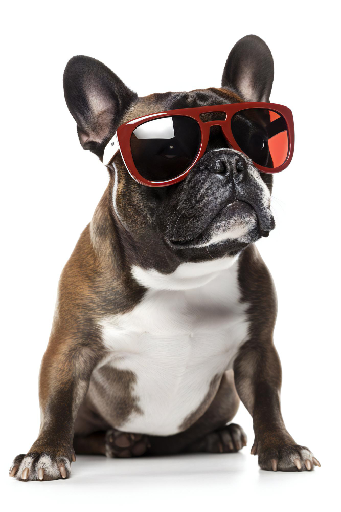

Frank Pe

Summary
This talented pooch is more than just a fetch champion - I am a
goal-driven, squirrel-chasing, ball-retrieving professional with a passion
for bringing joy to the lives of humans. With a track record of
enthusiastic tail wagging and a nose for success, I know how to charm the
socks off anyone
Education
-
Graduate of the school of life: Received a diploma in Doggie Manners and
Canine Etiquette in 2023 from the school of life in Mc Donald, TN.
-
Ongoing studies in Squirrel Chasing from the prestigious Barkshire
University.
Work Experience
-
Chief Squirrel Chaser at Thriving K9s, Park Division (2018 - Present):
- Led a team of fellow canines in executing strategic squirrel-chasing missions in multiple parks throughout the city.
- Utilized exceptional problem-solving skills to navigate complex squirrel hideouts, ensuring a high success rate in squirrel-chasing endeavors
- Collaborated with squirrels on cross-species communication, developing a unique understanding of the squirrel mindset.
-
Head of Public Relations at Home Sweet Home (2016 - 2018):
- Welcomed guests with wagging tail and warm snuggles, creating a positive first impression for all visitors.
- Enhanced the company's brand image by providing enthusiastic and tail-wagging customer service.
- Participated in public events, helping to raise awareness about the organization's mission of unconditional love and wagging tails.
-
Chief Bed Warmer at Cozy Comforts Inc. (2014 - 2016):
- Maintained a high level of expertise in providing deluxe bed warming services to households in need.
- Ensured superior comfort and relaxation by paw-fluffing blankets and testing pillows for optimal softness.
- Consistently received rave reviews for promoting a peaceful sleep environment and for being an expert at morning cuddles.
-
Tail Language Consultant at Pawsitive Communications Agency (2012 - 2014):
- Translated complex canine emotions into tail movements, helping effectively communicate with humans.
- Conducted private tail language training sessions for clients, resulting in improved understanding and bonding between humans and canines.
- Collaborated with a team of experts to develop a tail language dictionary, establishing standardized definitions for various tail expressions.
Key Skills & Achievements:
- Professional Ball Fetcher Extraordinaire: ⭐️⭐️⭐️⭐️⭐️
- Consistently achieved world-class fetch results, no ball left behind!
- Possesses a keen eye for spotting the perfect stick or tennis ball, ensuring hours of fetching entertainment.
- Perfected the art of "dropping the ball" in a variety of locations to keep humans on their toes.
- Expert Bed Warmer: ⭐️⭐️⭐️⭐️⭐️
- Received countless commendations for providing top-notch snuggles and warmth during chilly nights.
- Demonstrated exceptional skills in creating the perfect cozy spot by paw-fluffing blankets and pillows with precision.
- Tail Wagging & Energetic Collaboration ⭐️⭐️⭐️⭐️⭐️
- Recognized for exceptional tail wagging skills that can boost morale and bring smiles to even the grumpiest of faces.
- Collaborated seamlessly with human colleagues on numerous walks in the park, spreading joy and happiness wherever they go.
- Special talent for turning a dull Monday into an exciting game of chase-the-tail at the office.
- Master of Tail Language: ⭐️⭐️⭐️⭐️⭐️
- Fluent in tail wagging, the universal language of happiness and excitement.
- Known for translating complex canine emotions into tail movements, making communication with humans a breeze.
Awards and Recognitions
- Golden Ball Retriever Award 2013-2023:
- Most Energetic Tail Wag Award in 2023
- Snuggle Master Champion in 2016
- Canine Squirrel-Chasing Championship from 2014-2023
Certifications and Professional Development
- Certified Canine Professional: Ball Retrieval Specialist (CBRS)
- Barkshire University's Squirrel-Chasing Diploma
My Hobbies
Contact Me